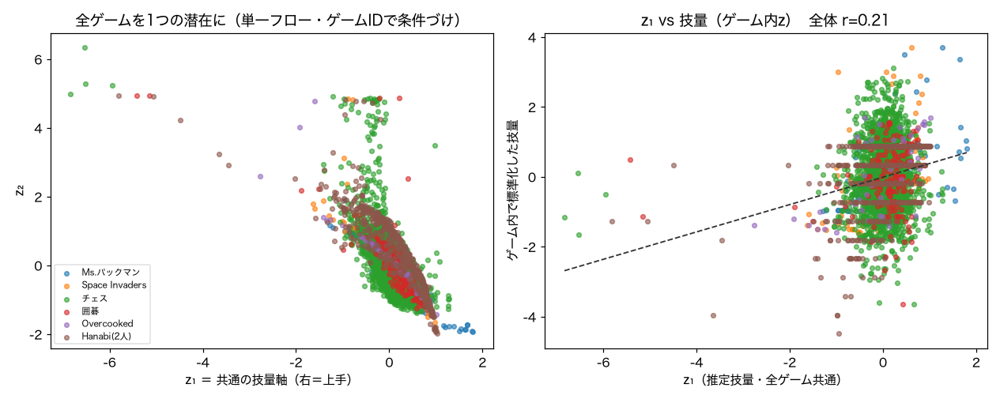
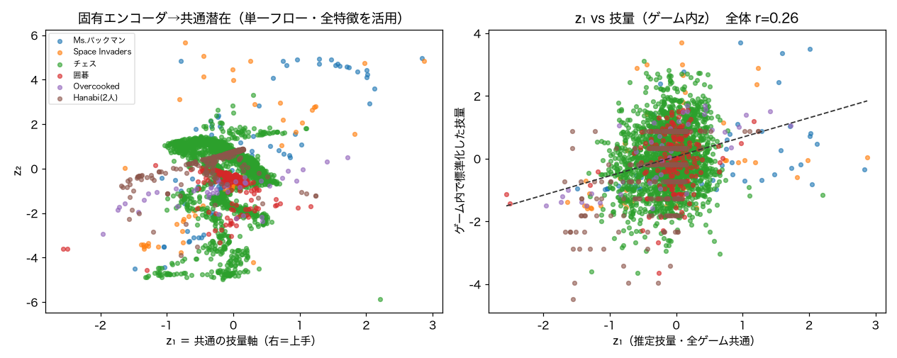
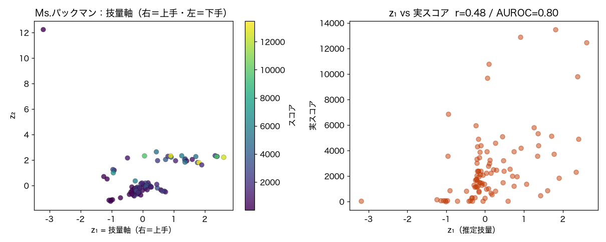
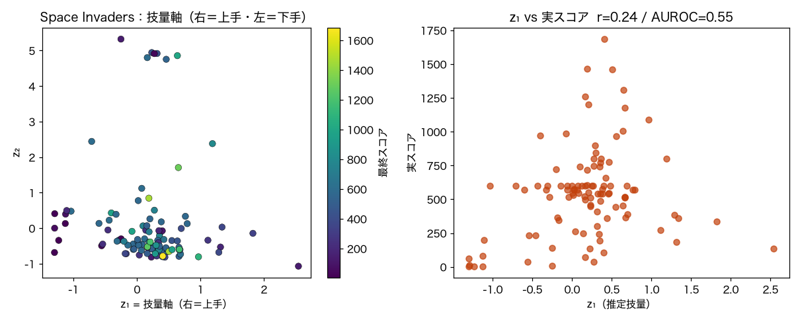
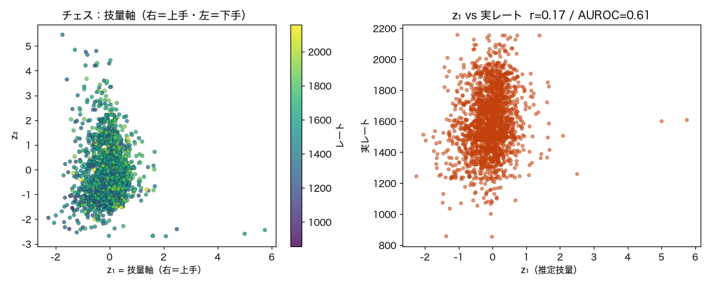
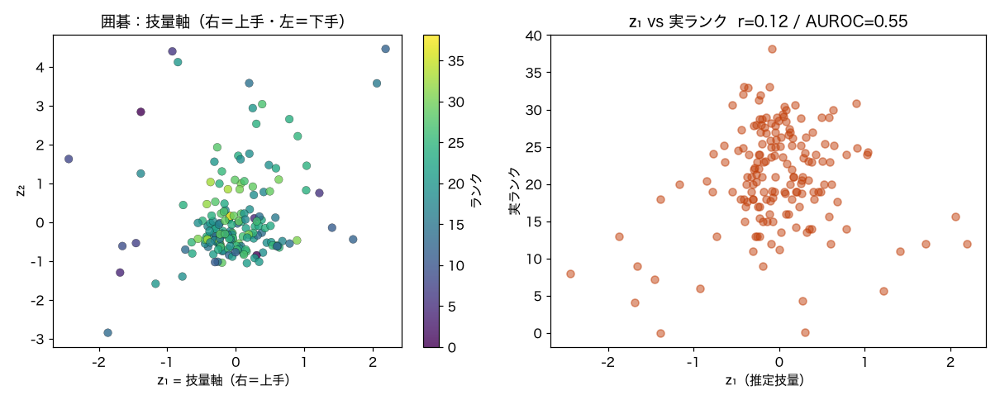
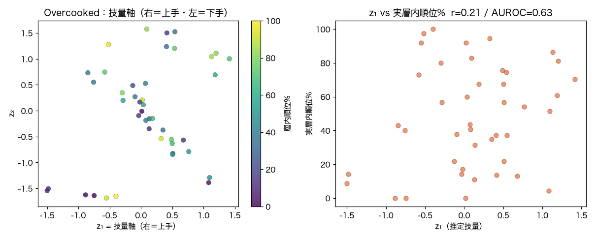
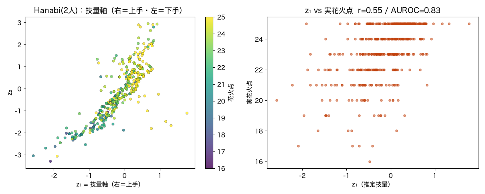

条件付き Normalizing Flow ＋ スコア/レートで、潜在に 右＝上手・左＝下手 の軸を通す。KAN-NF 実験群の一部。
やり方（全ゲーム共通）：各プレイからスタイル特徴（行動/駒の使い方の分布・切替率など、
勝敗/スコアはリークさせない）を作り、基底＝ガウス＋直線の技量軸の条件付きNSFを学習。
学習時に z₁ ≈ 標準化した技量ラベル を課し、z₁ そのものを技量軸にする（Phase 0でMs.パックマンにて
教師つき軸 AUROC 0.80 > 後付け 0.70 と確認）。技量は単調・順序尺度なので直線、円環は移動方向用に温存。
| ゲーム | 種別 | 件数 | 技量ラベル範囲 | 初心者vs熟練 AUROC | z₁×技量相関 |
|---|---|---|---|---|---|
| Ms.パックマン | 1人用 | 382 | スコア 10–18981 | 0.796 | 0.484 |
| Space Invaders | 1人用 | 423 | スコア 5–1960 | 0.661 | 0.37 |
| チェス | 対戦 | 7,712 | レート 856–2240 | 0.615 | 0.173 |
| 囲碁 | 対戦 | 672 | ランク -4–40 | 0.546 | 0.118 |
| Overcooked | 協力 | 172 | 層内順位% 0–100 | 0.629 | 0.214 |
| Hanabi(2人) | 協力 | 1,858 | 花火点 13–25 | 0.826 | 0.546 |
AUROC 0.5=勘・1.0=完璧。プレイスタイルだけから巧さをどれだけ読めるか。
各ゲーム別々のフローだと、チェスの z₁ と Hanabi の z₁ は別モデルの別座標で、直接は比べられない。そこで
ゲームIDを条件（context）にした 1 つの条件付きフローを学習し、技量はゲーム内で標準化してプール、
z₁ ≈ 自分のゲーム内での相対技量を全ゲームに課す。→ z₁ が1 本の共通座標になり、
チェスの z₁＝+1 と Hanabi の z₁＝+1 が「どちらも自分のゲームの平均より約1σ上手」という同じ意味になる。
入力の作り方を 2 通り比べた：A＝全ゲーム共通のスタイル記述子 行動エントロピー・最頻行動シェア・切替率・前後半のブレ(drift)（同じ計算・同じ意味）／
B＝各ゲームの固有特徴を小エンコーダで共通空間へ（固有情報を捨てない）。


| ゲーム | 種別 | 個別フロー | 単一フロー・A 汎用4特徴 | 単一フロー・B 固有エンコーダ |
|---|---|---|---|---|
| Ms.パックマン | 1人用 | 0.796 | 0.808 ▲ | 0.775 ▽ |
| Space Invaders | 1人用 | 0.661 | 0.815 ▲ | 0.763 ▲ |
| チェス | 対戦 | 0.615 | 0.545 ▽ | 0.583 ▽ |
| 囲碁 | 対戦 | 0.546 | 0.581 ▲ | 0.588 ▲ |
| Overcooked | 協力 | 0.629 | 0.878 ▲ | 0.944 ▲ |
| Hanabi(2人) | 協力 | 0.826 | 0.802 ▽ | 0.773 ▽ |
| 共通軸・全体 AUROC | 0.635 | 0.636 | ||
たった4 個の汎用スタイル特徴・1 本の共通 z₁ で、全体 AUROC 0.635。
「巧さは行動の散らし方・切替・打ち筋のブレに共通して滲む」＝技量軸がゲームを跨いで意味を持つ。
・方式B（固有エンコーダ）は各ゲームの全特徴を活かすので、チェス（0.583）と Overcooked（0.944）が回復・向上。ただしただ乗りではない：プール学習は個別フローより難しく、Hanabi/SI は逆に少し落ちる。全体はA・Bとも 約0.635＝与える情報量に依らず共通軸は同じ水準に着地する（＝軸の意味がゲームを跨いで安定）。
▲＝個別フロー以上。
学習した技量軸を実用に。各ゲームであるプレイヤーを採点（z₁パーセンタイル）し、実際に上手い人（実技量で上位）の プレイスタイルとの差から、動かすべきクセを具体化する。生成や外挿はせず100%実データ由来——お手本は本当に強い実プレイヤー。 助言の向きは上位1/3と下位1/3のスタイル差から決めるので個別の外れ値に振られない。実プレイ環境は作らないオフライン機能。
Hanabi は▼捨て札比（捨てるより情報を渡す）、Overcooked は▲INTERACT・▼静止（活発に動く）、 囲碁は▲3線・盤を広く、チェスは▲キャスリング——いずれも定石的な上達方向と一致。 採点 z₁ が実技量とズレる例（Space Invaders・囲碁）は、正直に軸が弱いゲームを映している。

技量ラベル＝スコア（10〜18981）。プレイスタイルだけから 初心者vs熟練 AUROC 0.796・z₁とスコア相関 0.484。（教師つき軸は後付け方向 0.739 を上回る）

技量ラベル＝スコア（5〜1960）。プレイスタイルだけから 初心者vs熟練 AUROC 0.661・z₁とスコア相関 0.37。

技量ラベル＝レート（856〜2240）。プレイスタイルだけから 初心者vs熟練 AUROC 0.615・z₁とレート相関 0.173。

技量ラベル＝ランク（-4〜40）。プレイスタイルだけから 初心者vs熟練 AUROC 0.546・z₁とランク相関 0.118。

技量ラベル＝層内順位%（0〜100）。プレイスタイルだけから 初心者vs熟練 AUROC 0.629・z₁と層内順位%相関 0.214。

技量ラベル＝花火点（13〜25）。プレイスタイルだけから 初心者vs熟練 AUROC 0.826・z₁と花火点相関 0.546。
・3種の関わり方すべてを同じ機構で通した：1人用（スコア）・対戦（レート/ランク）・協力（チーム点）。技量ラベルの正体はゲームごとに違うが、軸の作り方は共通。
・技量軸はソフトで、ゲームにより効き方が大きく違う。Hanabi(0.83)とMs.パックマン(0.80)が最も鋭く、囲碁(0.55)が最も弱い（盤の粗い配石＝線の位置分布だけでは段級位を読みにくい。定石・形・状態条件つき特徴が要る）。同じ協力でも Hanabi は鋭く、Overcooked は中程度（実人間trialが n=172 と小さく荒い）。
・スコア漏れに注意した：Hanabi は「成功プレイ数＝点数」なので play率をそのまま特徴にすると点数がそのまま漏れる。あえて play/捨て札の量を捨て、プレイ以外の行動（色ヒント/数字ヒントの構成比）だけで軸を作った。それでも AUROC0.83 ＝ヒント主体の協調スタイルそのものが強さと結びつく、という中身のある結果。Overcooked はレイアウトごとに点の桁が違うのでレイアウト内の順位（％）を技量ラベルにした。
・軸の共通化は達成（上の横断セクション）：ゲームIDを条件にした単一フローで、z₁ が全ゲーム共通の相対技量座標に。入力を汎用4特徴（A）にしても、各ゲーム固有特徴を小エンコーダで共通空間へ写して（B）も、全体は約0.635で同水準＝軸の意味は与える情報量に依らず安定。固有エンコーダはチェス・Overcookedを回復させる一方、プール学習が難しくHanabi/SIは少し落ちる（ただ乗りではない）。
・Phase 2（次）：この共通技量軸で「ユーザのプレイをスコアリング」「初心者に一歩上のお手本や補助」を出すミニ機能。
python -m gamesnf.games で自動生成。KAN-NF 実験群。